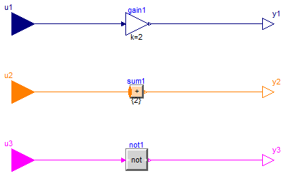
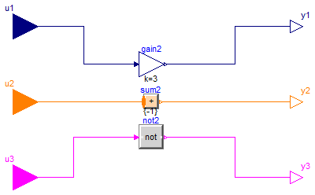

For all models in this package an FMU must be generated
Extends from Modelica.Icons.Package (Icon for standard packages).
| Name | Description |
|---|---|
| DifferentTypes1 | |
| DifferentTypes2 |

Extends from Modelica.Blocks.Interfaces.BlockIcon (Basic graphical layout of input/output block).
| Type | Name | Description |
|---|---|---|
| input RealInput | u1 | Input signal connector |
| input BooleanInput | u3 | Connector of Boolean input signal |
| output RealOutput | y1 | Output signal connector |
| output IntegerOutput | y2 | Integer output signal |
| output BooleanOutput | y3 | Connector of Boolean output signal |
| input IntegerInput | u2 |

Extends from Modelica.Blocks.Interfaces.BlockIcon (Basic graphical layout of input/output block).
| Type | Name | Description |
|---|---|---|
| input RealInput | u1 | Input signal connector |
| input BooleanInput | u3 | Connector of Boolean input signal |
| output RealOutput | y1 | Output signal connector |
| output IntegerOutput | y2 | Integer output signal |
| output BooleanOutput | y3 | Connector of Boolean output signal |
| input IntegerInput | u2 |